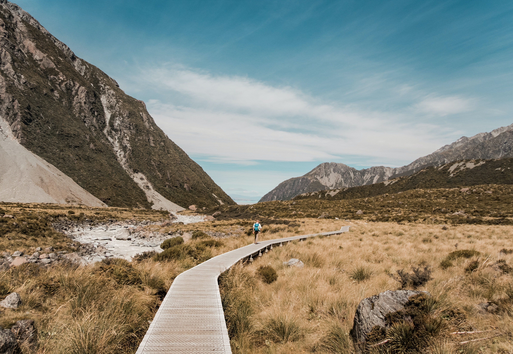
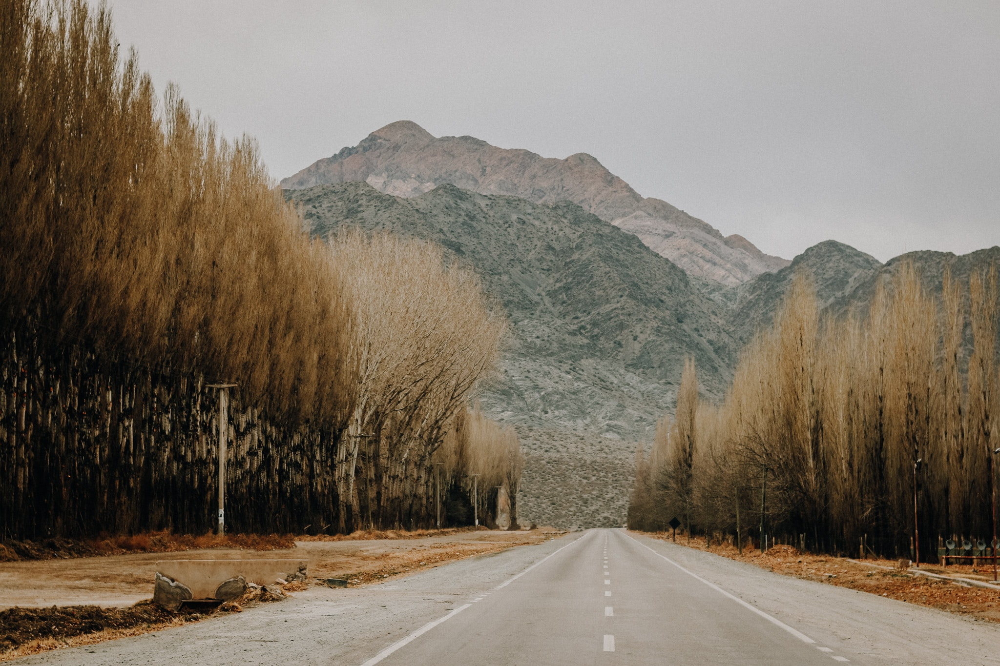

Top Countries
- Japan
- Newzealand
- Turkey
- Argentina
Japan

Japan (Japanese: 日本, Nippon or Nihon [ɲihoꜜɴ] ) is an island country in East Asia, located in the northwest Pacific Ocean. It is bordered on the west by the Sea of Japan, and extends from the Sea of Okhotsk in the north toward the East China Sea and Taiwan in the south. Part of the Ring of Fire, Japan spans an archipelago of 6852 islands covering 377,975 square kilometers (145,937 sq mi); the five main islands are Hokkaido, Honshu, Shikoku, Kyushu, and Okinawa. Tokyo is Japan's capital and largest city; other major cities include Yokohama, Osaka, Nagoya, Sapporo, Fukuoka, Kobe, and Kyoto.
New zealand
New Zealand (Māori: Aotearoa ) is an island country in the southwestern Pacific Ocean. It consists of two main landmasses—the North Island (Te Ika-a-Māui) and the South Island (Te Waipounamu)—and more than 700 smaller islands,[13] covering a total area of 268,021 square kilometres (103,500 sq mi). New Zealand is about 2,000 kilometres (1,200 mi) east of Australia across the Tasman Sea and 1,000 kilometres (600 mi) south of the islands of New Caledonia, Fiji, and Tonga. The country's varied topography and sharp mountain peaks, including the Southern Alps, owe much to tectonic uplift and volcanic eruptions. New Zealand's capital city is Wellington, and its most populous city is Auckland.
Turkey

Turkey (Turkish: Türkiye [ˈtyɾcije]), officially the Republic of Turkey, is a country bridging Europe and Asia. It shares borders with Greece and Bulgaria to the northwest; the Black Sea to the north; Georgia to the northeast; Armenia, Azerbaijan, and Iran to the east; Iraq to the southeast; Syria and the Mediterranean Sea to the south; and the Aegean Sea to the west. Turks form the vast majority of the nation's population and Kurds are the largest minority.[4] Turkey's capital is Ankara while its largest city and financial centre is Istanbul.
Argentina
Argentina (Spanish: [aɾxenˈtina]), officially the Argentine Republic[A] (Spanish: República Argentina), is a country in the southern half of South America. It shares the bulk of the Southern Cone with Chile to the west, and is also bordered by Bolivia and Paraguay to the north, Brazil to the northeast, Uruguay and the South Atlantic Ocean to the east, and the Drake Passage to the south. Argentina covers an area of 2,780,400 km2 (1,073,500 sq mi),[B] making it the largest Spanish-speaking nation in the world. It is the second-largest country in South America after Brazil, the fourth-largest country in the Americas, and the eighth-largest country in the world. Argentina is subdivided into twenty-three provinces, and one autonomous city, which is the federal capital and largest city of the nation, Buenos Aires. The provinces and the capital have their own constitutions, but exist under a federal system. Argentina claims sovereignty over a part of Antarctica, the Falkland Islands and South Georgia and the South Sandwich Islands.